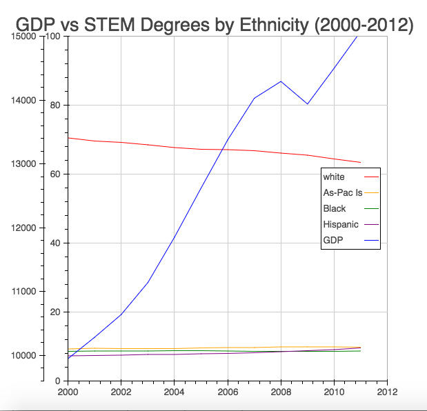
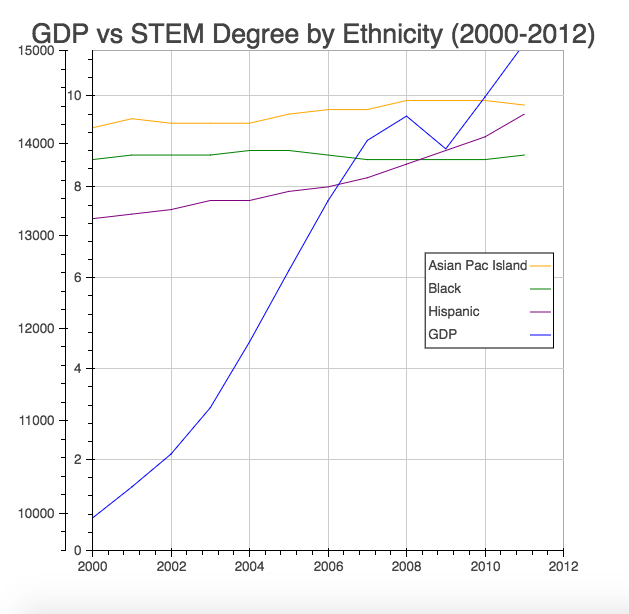
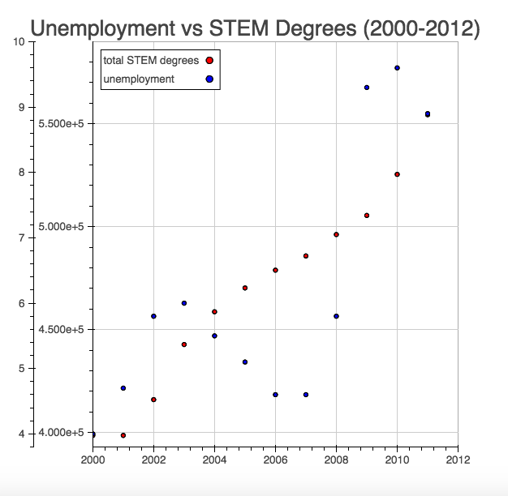
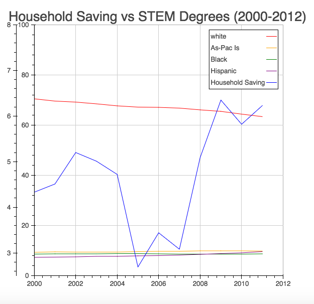

The idea behind my brief research was to compare student enrollment data with economic trends, answering whether there is a connection between certain economic metrics and enrollment data for STEM fields over a twelve-year period. I ultimately looked at three signs of economic health: GDP, unemployment, and household savings and compared them to STEM enrollment by ethnicity percentages and raw gender data. I hypothesized that there would be a connection, albeit a small one, linking economic health and a high STEM enrollment. Quite unexpectedly, I found evidence of a very strong correlation for some populations of STEM majors and GDP, which encouraged me to continue looking at the data.
Next, I examined student enrollment data by ethnicity and gender by running principle components analysis, or PCA, on enrollment data. PCA is a technique used in data with many dimensions "to find ways in which data points can be grouped." Here, there was no strong way to group the data points, contrary to what I anticipated.
Lastly came the visual analyss of depicting this data in graphs. Though maybe there is no causal relationship, some trends became apparent when in this way.
Feel free to check out my code for this project on github!
My STEM degree data came from the National Science Foundation's STEM education data. One study on this page sought to answer the question, "Who earns bachelor’s degrees in science and engineering?" and included two data sets used throughout this project: one on the total number of men and women in granted degrees in science and engineering per year from 2000 to 2012, which included the total amount of science and engineering degrees in the same time frame. The National Science Foundation also provided another invaluable data set on the racial distrubition in science and engineering degrees over the same twelve-year period. These data sets defined science and engineering as biological/agricultural sciences, physical sciences, computer sciences, mathematics/statistics, engineering, psychology, and social sciences, but excluded health sciences. It defined physical sciences as chemistry, physics, astronomy, and earth/atmospheric/ocean sciences. (The second data set included information only on U.S. citizens and permanent residents only; It did not include information regarding foreign nationals with temporary visas.) Because Native American numbers stagnated at low numbers, I did not include this data in my analysis.
My data on GDP came from the White House's official website, which contained a lot of information that I may revisit for more analysis. I was able to find the data for my specified time frame reported in billions.
Unemployment data came from www.infoplease.com/, which ultimately derivered its data from The U.S. Department of Labor, Bureau of Labor Statistics. The reported unemployment rate included persons age 16 and over. The website included one important caveat: "Beginning in Jan. 2006, data are not strictly comparable with data for 2005 and earlier years because of the revisions in the population controls used in the household survey."
The Organisation for Economic Co-operation and Development provided the household savings data, which was reported as a percent of household disposable income.
I was surprised to find that the amount of STEM degrees granted to men and women in the United States correlated as strongly as it did with GDP--with correlations of 0.96. As for ethnicity correlations, the percent of STEM degrees granted to Hispanic students correlated in a positive way the highest with GDP at .86. For white STEM degree recipients, there was a strong negative correlation of -0.958. For unemployment, the correlation was less stark. Interestingly, the percent of STEM degrees awarded to Hispanic and White students were of the same magnitude, but one positively correlated, while the other negatively correlated.
| GDP | Unemloyment | Household Savings | |
|---|---|---|---|
| Female | 0.960477496059 | 0.736378523605 | 0.601423477144 |
| Male | 0.966628874829 | 0.725369534674 | 0.574058720196 |
| White | -0.958467533849 | -0.789587982178 | -0.608410825852 |
| Hispanic | 0.904718752989 | 0.788099834793 | 0.726956676501 |
| Black | -0.0431835885359 | -0.105287706385 | 0.0386400787505 |
| Asian Pacific Islanders | 0.861704338201 | 0.649531508277 | 0.31294428421 |
Using PCA to examine the STEM degree data revealed that there was no pattern and thus no way to decrease the amount of variables for further analysis.
Using the Bokeh visualization library for Python, I constructed several graphs to look for the trends found with the correlation analysis.
When plotting all of these different categories of degree recipients, the scaling had to be taken into consideration not only because the number of STEM degrees earned per year are so far off from GDP values, but also because there is a much larger percentage of white science and engineering students.
(GDP here is reported in billions.)
Once White degree recipients were removed from the graph, the scaling allowed for the curves of Hispanic, Black, and Asian Pacific Islanders to be more visible. Ultimately, no patterns were apparent.
Unemployment appeared to have fluctuated in this twelve-year period and no patterns would be obvious. For this metric, I simply looked at total science and engineering degrees earned,
Just like unemployment, this data appeared to fluctuate in value without any clear connection to the collected STEM degree data.
